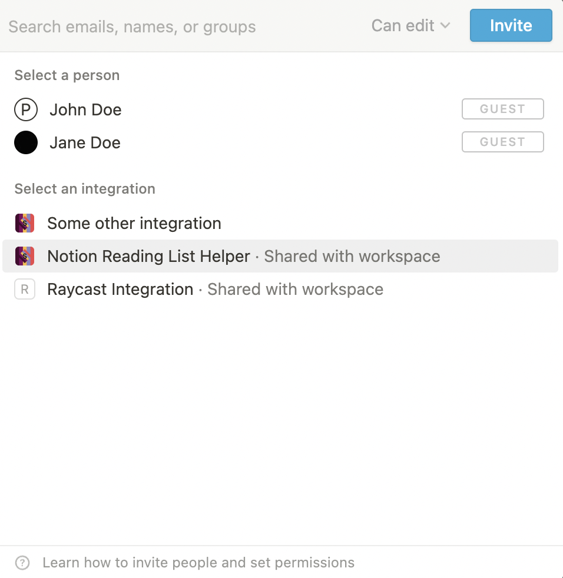
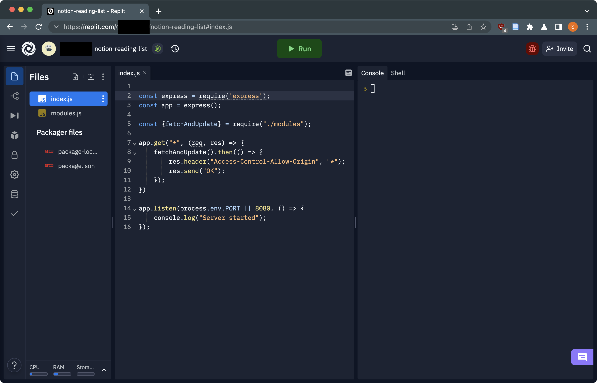

🚀 Superpowered reading lists in Notion
Fetch all of the relevant metadata in seconds so you can focus on what matters most.
It looks like you've used this guide before. We've pre-populated the input field with your previous entry.
Click here to skip to the interactive part of this guide.
Or, click here to erase stored settings.
Notion is one of the best places for organizing and storing your data. But when it comes to actually
collecting that data, some areas of the product are lacking. In this article, you'll learn how to
host your own autofiller for your Notion reading lists. Here's a preview of the final product.
Part I: Setting up your database
First, you'll need to duplicate
this
database template to your own Notion. This is done via the 'Duplicate' button in the top right.
Once you're done, make a note of the database ID. It's the 32 character random string that comes after https://www.notion.so/<username>/ in the URL.
You can also change styles and add new properties to your liking.
⚠️ Important - Please do not alter the following properties: "Title", "Description", "Author(s)", "Rating", "Genre(s)", "Link" and "Pages".
The program uses these to identify the columns in which data should be inserted. Don't change the name of the properties
nor their type.
Part II: Creating a Notion integration
Navigate to https://www.notion.so/my-integrations and click on the 'New integration' button.
Fill in whatever identifying information you like, then submit the form. Copy the 'Internal Integration Token' that's
on this page.
Go back to the database you created and share it with your new integration. It should look like the below image, where
'Notion Reading List Helper' is whatever you named your integration in the form above.

Part III: Setting up the web server
We're going to use Repl.it to host our web server. You'll need to create an account if you
don't have one already - but it's free and lasts forever.
Head over to the Repl.it page for the reading list.
Then, if needed, sign up or log in the Replit. You should eventually arrive at a page like the below.

We're almost done - we just need to fill in a few things. Click the lock on the menu at the left to navigate to the 'Secrets' view.
Secret 1: For the key, type in DATABASE_ID. For the secret, paste in the database ID you took a note of earlier. Then, press 'Add new secret'.
Secret 2: For the key, type in NOTION_API_KEY. For the secret, paste in the Internal Integration Token you took a note of earlier. Then, press 'Add new secret'.
Press the green 'Run' button at the top and wait 30 seconds for a white window to pop up with a URL and some text. Copy that URL, it should look like https://notion-reading-list.username.repl.co/.
Paste the URL below in the input box and click 'Go'. While this page and the Repl.it is open, we will query your database every 5 seconds. Also, it'll be saved in your browser's local storage.
Part IV: Activating the program
Once you paste in the server URL and press 'Go', any page you create in the database that ends with a semicolon will have metadata fetched for it.
🌟 Bonus section: Automating this process, forever
You can use an external service to ping your server every minute or so in order to keep it up to date.
In this section, we'll guide you on how to do just that.
First, you'll need to create an account on cron-job.org. Once you've done that, you'll see a console.
Click 'Create cronjob' on the right of the page.
You can name the job whatever you'd like. For the URL, type in https://[YOUR REPLIT SERVER URL]/fetch.
That is, the server URL that you'd paste in the input box above, appended with /fetch.
Set the frequency to every 1 minute, then, click 'Create'.
All done! You can check if it works by using your reading list normally and checking if it updates.